I Le Projet :
nous avons construit une petite voiture télécommandée par Bluetooth avec suivi de ligne grâce à un capteur de ligne infrarouge et évitement d'obstacles grâce à un télémêtre à ultrasons. Elle peut être contrôlée à distance à partir d'un smartphone via une application.
pour se faire nous disposons de :
-
HC-05
Le HC-05 est un module Bluetooth qui peut être utilisé pour établir une communication sans fil entre une arduino et un téléphone. Le HC-05 dispose d'une portée de communication allant jusqu'à 10 mètres et est très facile à utiliser avec une interface série simple.
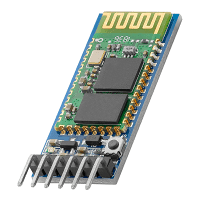 -
HC-SR04
Le HC-SR04 est un module de capteur à ultrasons qui peut être utilisé pour mesurer la distance avec un objet. Il utilise des signaux ultrasoniques pour détecter la distance avec une précision et une plage de mesure élevée.
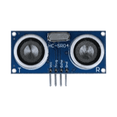 -
L298n
Le L298N est un double pont en H qui peut être utilisé pour contrôler la vitesse et la direction des moteurs à courant continu.
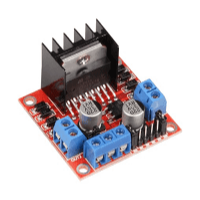 -
QTR-3RC
Le QTR-3RC est un capteur de ligne infrarouge qui peut être utilisé pour détecter la présence d'une ligne. Il est composé de trois capteurs infrarouges et dispose d'une interface analogique pour une lecture précise de la position de la ligne.
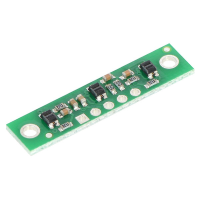 -
Arduino UNO Rev3
L'Arduino Uno Rev3 est une carte électronique équipée d'un microcontrôleur. Elle dispose de broches d'entrée/sortie pour communiquer avec différents composants électroniques.
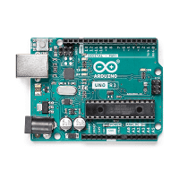
II Les Capteurs:
-
capteur à infrarouge
Entrée/Sortie du capteur
- GND : à brancher à la terre. sert à l'alimentation du capteur.
- VCC : à brancher au 5V de l'arduino. sert à l'alimentation du capteur.
- sortie 1 : à brancher au A0 de l'arduino. sortie analogique representant le niveaux d'absorption des infrarouges 0 pour une réflexion totale et 1023 pour une absorption totale.
- sortie 2 : à brancher au A1 de l'arduino. sortie analogique representant le niveau d'absorption des infrarouges 0 pour une réflexion totale et 1023 pour une absorption totale.
- sortie 3 : à brancher au A2 de l'arduino. sortie analogique représentant le niveau d'absorption des infrarouges 0 pour une réflexion totale et 1023 pour une absorption totale.
Experiences Réalisées
-
Nous avons tout d'abord mesuré le capteur afin de s'assurer de ses dimensions :
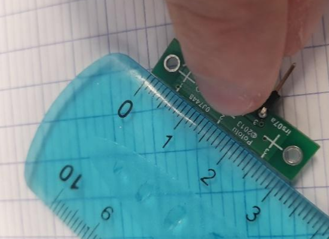 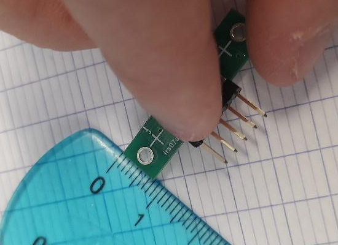nos résultats concordent bien avec la documentation fournie.
Nous avons mesuré la distance optimale du capteur avec le sol :
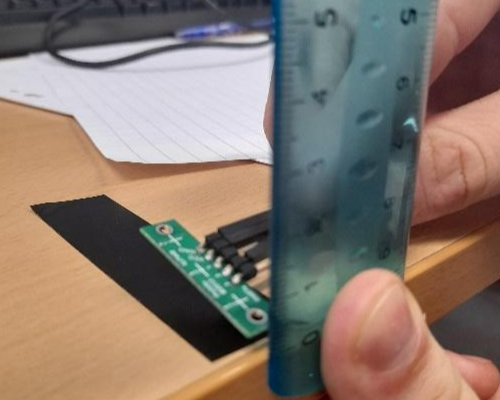on obtient ce tableau :
hauteur 10 9 8 7 6 5 4 3 valeur 882 900 910 920 927 900 870 810 Grâce à ce tableau, nous pouvons en déduire que la distance optimale entre le capteur et le sol est 6mm.
Code utilisé pour les tests
int const capteurIR= A0; // permet de donner un nom à une entrée, // ce n’est pas obligatoire mais conseillé int ValeurIR=0 ; // crée la variable du capteur void setup() { Serial.begin(9600); // définit la vitesse de la liaison série } void loop() { Serial.print("Valeur du capteur: "); // envoi du texte sur la liaison série ValeurIR = analogRead(capteurIR); //lire l’entrée analogique qui correspond au capteur Serial.println(ValeurIR); // envoi la valeur du capteur sur la liaison série delay(100);// attente de 100ms entre chaque valeur }Conclusion des test:
le capteur a les dimensions indiquées sur le doc 32 mm × 8 mm × 3 mm, il devra être installé à 6 mm du sol pour un fonctionnement optimal.
Influence:
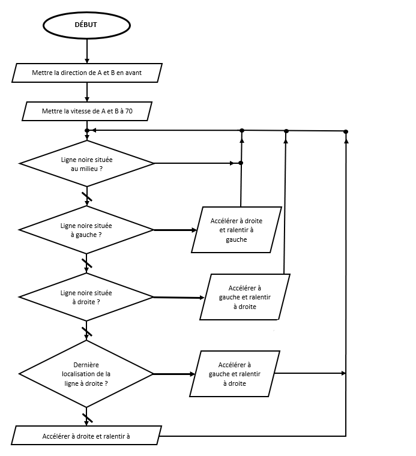capteur à ultrasons
Entrée/Sortie du capteur
- GND : à brancher à la terre. sert à l'alimentation du capteur.
- VCC : à brancher au 5V de l'arduino. sert à l'alimentation du capteur.
- Trig : à brancher au 5 de l'arduino. entrée digitale, émission de salve ultra-sonor par le capteur lorsque l'état du pin est haut (5V)
- Echo : à brancher au 4 de l'arduino. sortie digitale, émet un signal électrique quand une salve est reçue.
Experiences Réalisées
-
nous avons mesuré la distance minimale et maximale de captation :
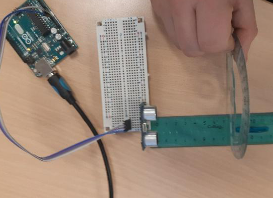 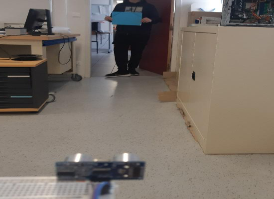La règle nous permet de trouver la distance minimale de capture : 2 cm.
Le mètre nous permet de trouver la distance maximale de capture : 400 cm.
nous avons mesuré la distance minimale et maximale de captation :
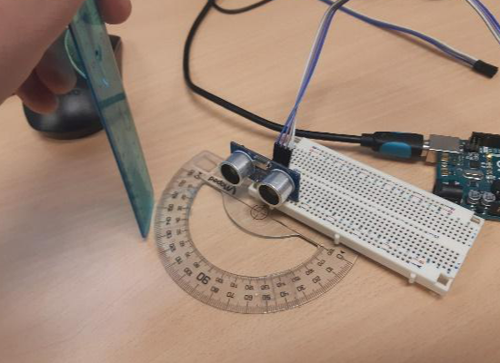 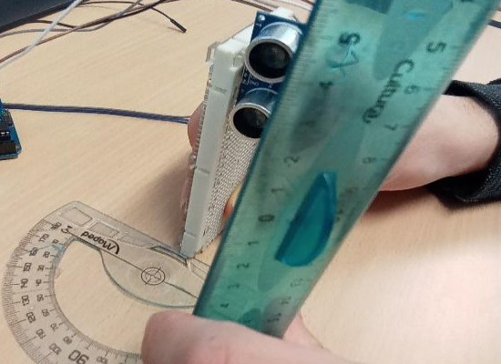L’angle de détection horizontal est d’environ 40 degrés.
L’angle de détection vertical est environ égal à 60 degrés.
Code utilisé pour les tests
int const trigPin=5; //Trig int const echoPin=4; //Echo long duree, distance; // variables pour les calculs void setup() { Serial.begin (9600); pinMode(trigPin, OUTPUT); //On défini Trig comme une sortie pinMode(echoPin, INPUT); //On défini Echo comme une entrée } void loop() { digitalWrite(trigPin, LOW); // On met la sortie trigPin à 0 delayMicroseconds(2); // attente 2ms digitalWrite(trigPin, HIGH); // On met la sortie trigPin à 1 delayMicroseconds(10); //Trig envois pendant 10ms digitalWrite(trigPin, LOW); // On met la sortie trigPin à 0 // On calcul le temps pour l'aller retour du signal duree = pulseIn(echoPin, HIGH); distance = duree*340/(2*10000); //Pour le moniteur série Serial.print(distance); Serial.println(" cm "); Serial.print(duree); Serial.println(" ms"); delay(100); }Conclusion des test:
le capteur possède les dimensions indiquées sur le doc 45 mm × 20 mm × 15 mm, il devra être installé à la verticale pour un fonctionement optimal.
il peut capter des obstacle situé entre 2 cm et 4 m sur une plage de 40° horizontal et 60° vertical.
Influence:
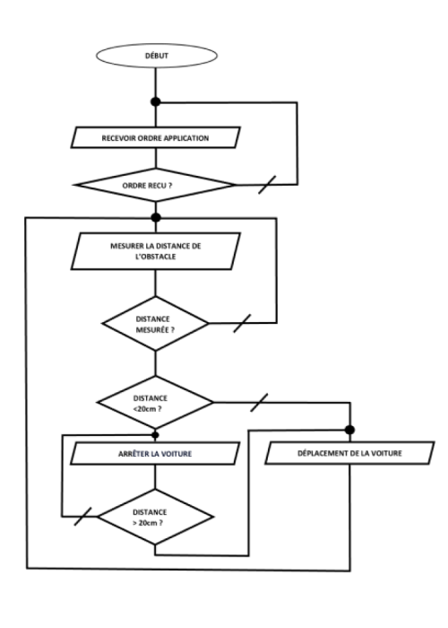III La carte de puissance
Le driver moteur L298N est une carte d’extension compatible à votre Arduino et qui permet aussi bien de piloter deux moteurs à courant continu que de les alimenter électriquement.
-
Entrée/Sortie de la carte
-
- ENA: Entrée analogique, permet de régler la vitesse du moteur A.
- ENB: Entrée analogique, permet de régler la vitesse du moteur B.
- IN1: Entrée digitale, permet de régler la direction du moteur A.
- IN2: Entrée digitale, permet de régler la direction du moteur A.
- IN3: Entrée digitale, permet de régler la direction du moteur B.
- IN4: Entrée digitale, permet de régler la direction du moteur B.
-
Le MLI
Le MLI (Modulation de Largeur d'Impulsion) est une technique pour réguler la tension ou le courant fourni à une charge électrique en modulant la largeur des impulsions d'un signal de commande en fonction d'une tension de référence.
ici, on s'en sert pour commander la vitesse des moteur
pour s'en servir il faut appeler la fonction
analogWrite(byte pin,int valeur); -
Tableau de la polarité des broche de sortie en fonction de l'état binaire des entrées digitales
état logique de IN1 0 1 0 1 0 1 0 1 0 1 0 1 0 1 0 1 état logique de IN2 0 0 1 1 0 0 1 1 0 0 1 1 0 0 1 1 état logique de IN3 0 0 0 0 1 1 1 1 0 0 0 0 1 1 1 1 état logique de IN4 0 0 0 0 0 0 0 0 1 1 1 1 1 1 1 1 polarité de la borne OUT1 - + - + - + - + - + - + - + - + polarité de la borne OUT2 - - + + - - + + - - + + - - + + polarité de la borne OUT3 - - - - + + + + - - - - + + + + polarité de la borne OUT4 - - - - - - - - + + + + + + + + sens de rotation du moteur A = > < = = > < = = > < = = > < = sens de rotation du moteur B = = = = > > > > < < < < = = = = -
câblage
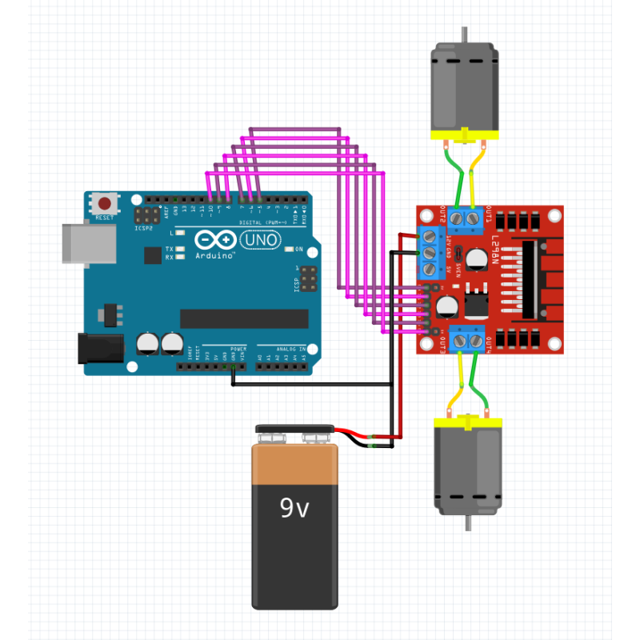
-
-
Code
pour une intégration plus facile, nous avons écrit une librairie
//fichier moteur.h #ifndef MOTOR_H #define MOTOR_H #include "Arduino.h" class Motor { // on crée un nouvel objet public: // on mettra ici tous les éléments accessibilité au public Motor(byte, byte, byte, byte, byte, byte); void setVitesseA(int); void setVitesseB(int); int getVitesseA(); int getVitesseB(); void setDirectionA(bool); void setDirectionB(bool); bool getDirectionA(); bool getDirectionB(); private: // et ici tous les éléments accessibles uniquement en privé bool directionA = 0, directionB = 0; // pour stocker les directions int vitesseA = 0,vitesseB = 0; // pour stocker les vitesses byte ENA = 0, ENB = 0, IN1 = 0, IN2 = 0, IN3 = 0, IN4 = 0; // pour stocker les pin }; #endif//fichier moteur.cpp #include "Arduino.h" #include "Motor.h" // Pin Motor::Motor(byte ena, byte in1, byte in2, byte in3, byte in4, byte enb) { ENA = ena; IN1 = in1; IN2 = in2; ENB = enb; IN3 = in3; IN4 = in4; pinMode(ENA,OUTPUT); pinMode(ENB,OUTPUT); pinMode(IN1,OUTPUT); pinMode(IN2,OUTPUT); pinMode(IN3,OUTPUT); pinMode(IN4,OUTPUT); digitalWrite(ENA, LOW); digitalWrite(ENB, LOW); digitalWrite(IN1, HIGH); digitalWrite(IN2, LOW); digitalWrite(IN3, HIGH); digitalWrite(IN4, LOW); } //Vitesse moteur A void Motor::setVitesseA(int val) { vitesseA = val; analogWrite(ENA, vitesseA); } //Vitesse moteur B void Motor::setVitesseB(int val) { vitesseB = val; analogWrite(ENB, vitesseB); } //Vitesse moteur A int Motor::getVitesseA() { return vitesseA; } //Vitesse moteur B int Motor::getVitesseB() { return vitesseB; } // Direction moteur A void Motor::setDirectionA(bool val) { directionA = val; digitalWrite(IN1, directionA); digitalWrite(IN2, !directionA); } // Direction moteur B void Motor::setDirectionB(bool val) { directionB = val; digitalWrite(IN3, directionB); digitalWrite(IN4, !directionB); } // Direction moteur A bool Motor::getDirectionA() { return directionA; } // Direction moteur B bool Motor::getDirectionB() { return directionB; }//fichier main.ino #include "motor.h" Motor mt(5,6,7,8,9,10); void setup() { Serial.begin(9600); } void loop() { mt.setVitesseA(input("Vitesse A: [0-255] ")); mt.setVitesseB(input("Vitesse B: [0-255] ")); mt.setDirectionA(input("Direction A: [0-1] ") == 1); mt.setDirectionB(input("Direction B: [0-1] ") == 1); } int input(String ask){ Serial.println(ask); while(Serial.available() <= 0){delay(10);} return Serial.readString().toInt(); } -
Experience
-
nous avons commencé par mesurer les côtés du L298N
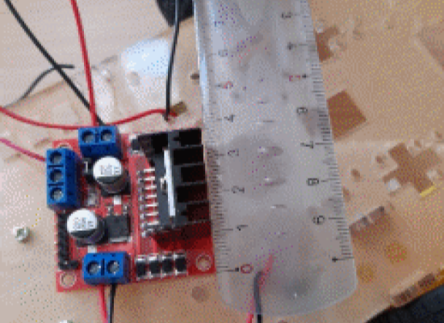 -
puis la vitesse de rotation des moteurs selon l’intensité qu’ils reçoivent grâce à un tachymètre
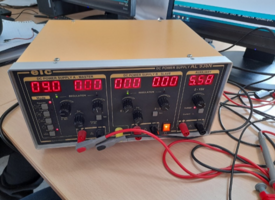 -
conclusion des tests
-
la carte à bien pour dimensions 44 mm x 44 mm .
-
d'après nos mesures, on obtient les graphiques suivants :
 par rapport à U (V).png)
 par rapport à PWM.png)
-
on peut en déduire :
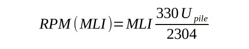
-
-
IV La Radio-commande
-
Le Bleutooth
Le Bluetooth est une technologie de communication sans fil qui utilise des ondes radio pour transmettre des données et des informations entre les appareils. le Bluetooth peut être utilisé pour contrôler et piloter des appareils à distance, tels que des drones ou des voitures télécommandées.
-
Le module HC-05
Le module HC-05 est un module Bluetooth qui permet de communiquer avec un autre appareil Bluetooth. Il est possible de le connecter à un Arduino pour contrôler un robot ou un drone à distance.
-
cablage
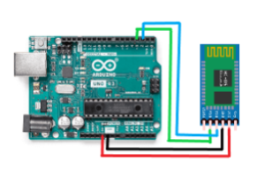 -
code des tests
#include <SoftwareSerial.h> SoftwareSerial BTserial(2, 3); // RX | TX bool IRActive = false; void setup() { Serial.begin(9600); BTserial.begin(38400); randomSeed(analogRead(0)); } void loop() { delay(random(100)); // simulation du temp prix par un autre programe ex: lecture de capteur. ecouter(); } void ecouter(){ bool premierNombreEstNegatif = false; bool secondNombreEstNegatif = false; String representationPremierNombre = ""; String representationSecondNombre = ""; unsigned long currentMillis = millis(); char bt = ' '; while (BTserial.available() <= 14) { // on attend d'être sûr d'avoir au moins un message complet. if((millis() - currentMillis) > 500){ // si on attend plus de 0.5s return; // alors on s'arrete } } while (BTserial.available() > 0) { // tant qu'on a des donné à analiser char c = BTserial.read(); // on les recupere if (c == ';') { // on cherche une fin de transmition bt = BTserial.read(); // ---------------------------------------------------------------------------------------------------------------------------------- representationPremierNombre += (char)BTserial.read();// on lit le message selon la forme X X X X X X ; representationPremierNombre += (char)BTserial.read();// ^ ^ ^ ^ ^ secondNombreEstNegatif = BTserial.read() == '1'; // | | | | | representationSecondNombre += (char)BTserial.read();// (1)(2)(3)(4)(5) representationSecondNombre += (char)BTserial.read();// (1) signe du nb 1 ; (2) valeur absolue de nb 1 ; (3) signe du nb 2 ; (4) valeur absolue de nb 2 ; (5) pour delimité les paket :) // ---------------------------------------------------------------------------------------------------------------------------------- if(bt == '2'){ IRActive = !IRActive; Serial.println(IRActive ? "IR activé" : "IR desactivé"); // juste pour les log return; } premierNombreEstNegatif = bt == '1'; int premierNombre = (int) strtol( &representationPremierNombre[0], NULL, 16); //convertion de representation de nombre hexadecimal en nombre int secondNombre = (int) strtol( &representationSecondNombre[0], NULL, 16); //idem Serial.println("A: " + String(premierNombreEstNegatif ? premierNombre*-1 : premierNombre) + " B: " + String(secondNombreEstNegatif ? secondNombre*-1 : secondNombre)); // juste pour les log return; } } }
-
-
L'Application
nous avons réalisé l'app sur Android Studion un environnement de développement intégré (IDE) officiel pour la création d'applications mobiles Android, créé par Google. Il fournit un ensemble d'outils puissants pour les développeurs d'applications Android, tels que des éditeurs de code, des outils de débogage, des émulateurs, des profilers, des outils de test et bien plus encore.
L'utilisation de l'IDE est très simple : il suffit de placer les éléments dans un fichier XML.
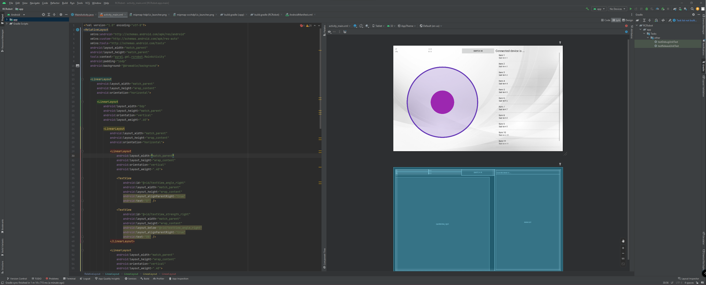Puis, il faut coder le programme exécuté par l'appareil en Java afin d'interagir avec le Bluetooth et les éléments.
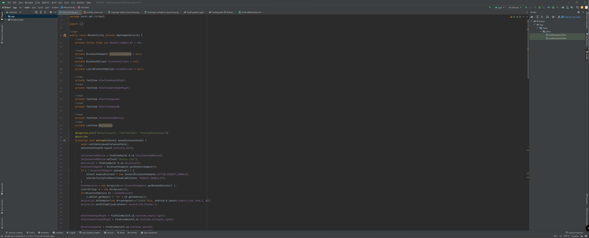Voici le resultat :
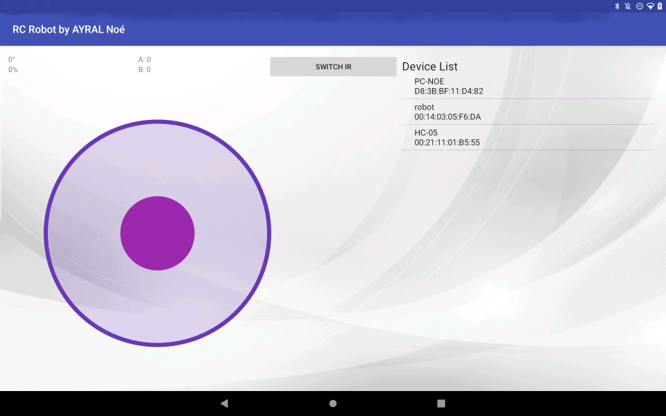-
fonctionnalité
- connexion au robot
- contrôle du robot
- arrêt/lancement du mode IR
-
code
pour des raisons de lisibilité on ne parlera pas de tout le code de l'app ici.
//l'extrait qui suit est le code de l'application android qui permet de piloter le robot avec le joystick final JoystickView joystickRight = findViewById(R.id.joystickView_right); joystickRight.setOnMoveListener((angle, strength) -> { mTextViewAngleRight.setText(angle + "°"); mTextViewStrengthRight.setText(strength + "%"); int VitesseA = angleToSpeed(angle)*strength/100; int VitesseB = angleToSpeed(angle-90)*strength/100; mTextViewSpeedA.setText("A: "+ VitesseA); mTextViewSpeedB.setText("B: "+ VitesseB); if ( bluetoothClient == null ) return; String msg =""; if(VitesseA >= 0){ msg = msg+'0'; msg = msg + String.format("%02X", VitesseA); }else{ msg = msg+'1'; msg = msg + String.format("%02X", VitesseA*-1); } if(VitesseB >= 0){ msg = msg+'0'; msg = msg + String.format("%02X", VitesseB); }else{ msg = msg+'1'; msg = msg + String.format("%02X", VitesseB*-1); } msg = msg+';'; bluetoothClient.writeString( msg); }); private int angleToSpeed(int angle){ if(angle < 0){ angle+=360; } if(angle<90){ return 255; }else if(angle < 180){ return (angle - 90) * -510 / 90 + 255; //(x - in_min) * (out_max - out_min) / (in_max - in_min) + out_min avec x = angle, in_min = 90 , in_max = 180 , out_min = 255 et out_max = -255 => fonction map de arduino.h }else if(angle < 270){ return -255; }else{ return (angle - 270) * 510 / 90 - 255; //(x - in_min) * (out_max - out_min) / (in_max - in_min) + out_min avec x = angle, in_min = 270 , in_max = 360 , out_min = -255 et out_max = 255 => fonction map de arduino.h } }//l'extrait qui suit est le code de l'application android qui permet d'activer ou désactiver le mode de suivie de ligne Button button = (Button) findViewById(R.id.button); button.setOnClickListener(v -> { if ( bluetoothClient == null ) return; bluetoothClient.writeString( "200000;200000;200000;");// on envoie trois fois la même commande pour être sur que le robot la recoive });
-
-
Protocole
ce protocole est constitué de packet conposé de 7 octets, le premier octet indique si un bouton est appuyé ou la direction du moteur A, si le premier octet représente la direction du moteur A alors le deuxième et troisième octet représentent la vitesse du moteur A au format hexadécimal tandis que le quatrième indique la direction du moteur B et les cinq et sixième octet représentent la vitesse du moteur B au format hexadécimal. le septième octet est un octet de fin de packet.
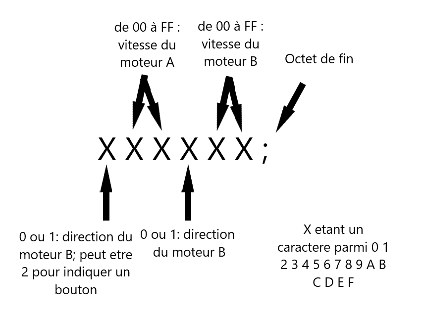
V La voiture
Le chassis est une plaque de 3mm d'épaisseur, de 200mm de longueur et de 100mm de largeur.
Il s'agit de la pièce qui contient tous les éléments de la voiture.-
Positionement des moteurs
Les moteurs sont placés au centre et un peu vers l'avant de la voiture, aux bords gauche et droit. Ils sont fixés sous la voiture afin d'obtenir une hauteur assez élevée de celle-ci.

-
Positionement du L298n
Le L298N est positionné vers l'avant et au centre de la voiture, juste devant la carte arduino. Elle est fixée au chassis.
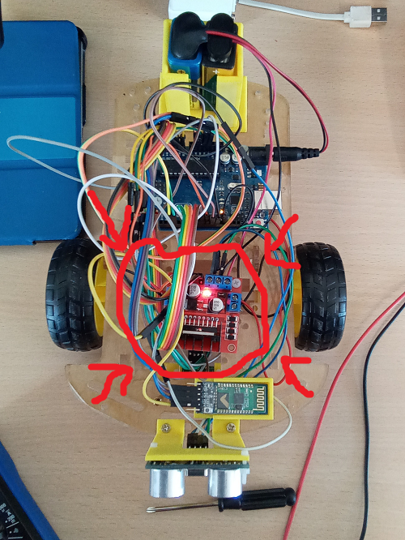 -
Positionement de l'arduino
La carte arduino est aussi positionnée sur le chassis, au centre et vers l'arrière de la voiture, devant le compartiment à piles.
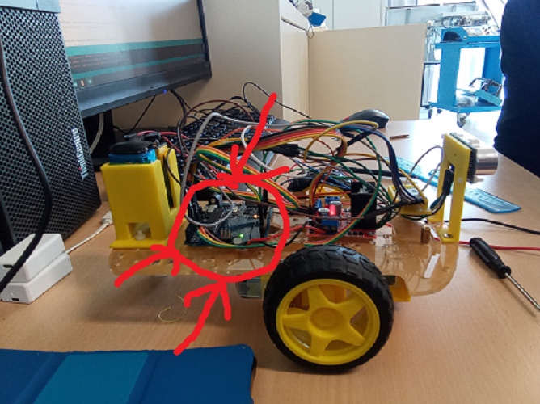 -
Positionement du QTR-3RC
Le capteur à infrarouges est positionné à 6mm du sol et à l'avant de la voiture à l'aide d'une pièce réglable constituée de deux parties: une fixée au chassis à l'aide de deux vis et une autre contenant le capteur, reliée à la première à l'aide de vis, formant un assemblage de longueur variable.
Cette configuration permet un réglage facile et une éventuelle correction rapide de la distance de l'infrarouge par rapport au sol si besoin.et une autre contenant l'infrarouge, reliée à la première à l'aide de vis,
formant un assemblage de longueur variable.
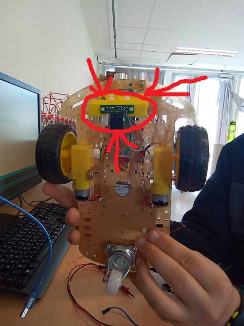
Cette configuration permet un réglage facile et une éventuelle correction de la distance de l'infrarouge par rapport au sol si besoin -
Positionement du HC-SR04
Le capteur à ultrasons HC-SR04 est également fixé à l'avant de la voiture avec une pièce dédié à celui-ci de façon à ce qu'il soit placé parallèle au sol, à une hauteur suffisamment petite pour pouvoir détecter les obstacles devant lui.
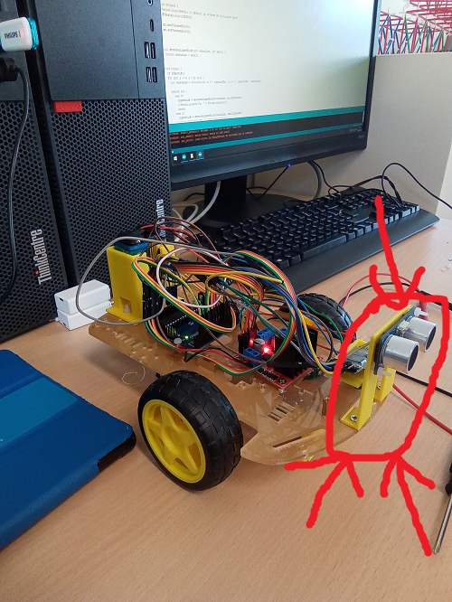 -
Positionement du HC-05
Le HC-05 recevant le Bluetooth est protégé par un support ouvert sur le dessus afin de le rendre facilement manipulable.
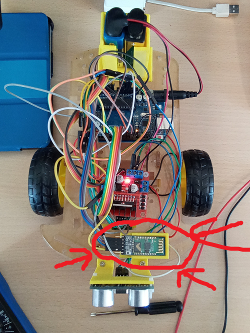
Il est placé à l'avant de la voiture, près du capteur à ultrasons. -
Positionement des piles
Les piles sont positionnées sur le chassis de façon verticale à l'aide d'un support conçu à cet effet.
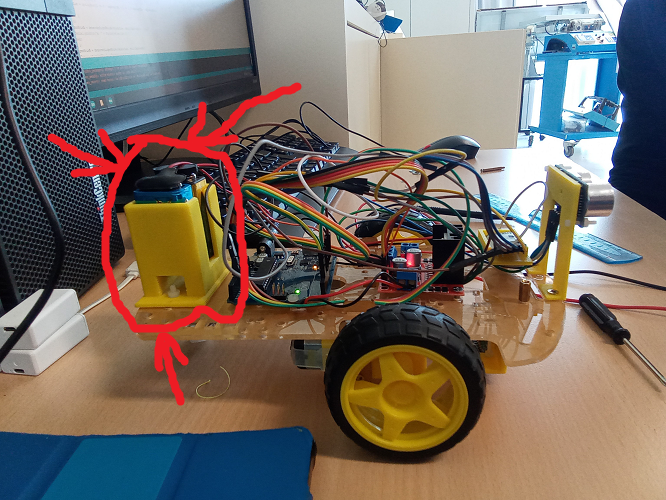
Sur celui-ci, nous avons placé les piles verticalement afin d’obtenir un gain de place pour les autres éléments de la voiture. La face supérieure des piles est placée à l'air libre pour un accès facile aux branchements, pour recharger facilement la pile si besoin. Le support est directement fixé au châssis à l’aide de deux vis.
VI Conclusion
-
Algorithme
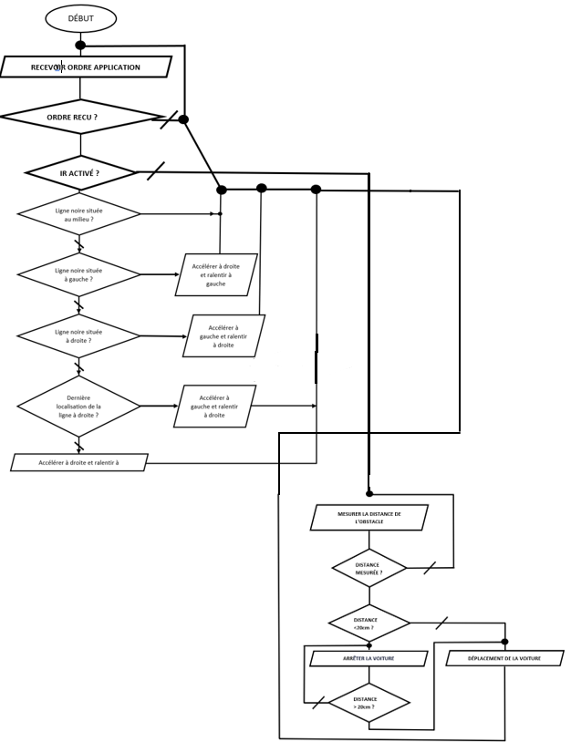 -
Code
-
Tout d'abord, nous avons écrit le programme pour que le robot écoute les ordres de la télécommande :
// Inclusion des bibliothèques nécessaires #include "Motor.h" #include <SoftwareSerial.h> // Pin Moteur // Définition des pins utilisées pour contrôler les moteurs du robot Motor mt(5, 6, 7, 8, 9, 10); // Initialisation d'une connexion série avec un autre appareil via Bluetooth SoftwareSerial BTserial(2, 3); // RX | TX // US Pin // Définition des pins utilisées pour le capteur de distance à ultrasons const int echoPin = 4; // Sortie const int trigPin = 11; // Entrée void setup() { // Initialisation des connexions séries Serial.begin(9600); // Définit la vitesse de la liaison série BTserial.begin(38400); // Configuration des pins du capteur de distance à ultrasons pinMode(trigPin, INPUT); pinMode(echoPin, OUTPUT); } void loop() { // Variables pour stocker les données de la télécommande bool premierNombreEstNegatif = false; bool secondNombreEstNegatif = false; String representationPremierNombre = ""; String representationSecondNombre = ""; // On mesure le temps depuis le démarrage de la boucle principale unsigned long currentMillis = millis(); while (BTserial.available() <= 14) { // On attend d'être sûr d'avoir reçu un message complet if ((millis() - currentMillis) > 500) { // Si on a attendu plus de 0.5s sans recevoir de message, on arrête les moteurs mt.setVitesseA(0); mt.setVitesseB(0); return; } } while (BTserial.available() > 0) { // Tant qu'on a des données à analyser char c = BTserial.read(); // On lit le prochain caractère de la communication Bluetooth if (c == ';') { // Si on a trouvé le caractère de fin de transmission // On extrait les données de la télécommande premierNombreEstNegatif = BTserial.read() == '1'; representationPremierNombre += (char)BTserial.read(); representationPremierNombre += (char)BTserial.read(); secondNombreEstNegatif = BTserial.read() == '1'; representationSecondNombre += (char)BTserial.read(); representationSecondNombre += (char)BTserial.read(); // On convertit les représentations hexadécimales des nombres en entiers int premierNombre = (int) strtol( &representationPremierNombre[0], NULL, 16); int secondNombre = (int) strtol( &representationSecondNombre[0], NULL, 16); // On vérifie la distance avant de commander les moteurs if (getDistance() > 20) // Si la distance est supérieure à 20 cm, on peut commander les moteurs { mt.setDirectionA(!premierNombreEstNegatif); // On définit la direction des moteurs mt.setDirectionB(!secondNombreEstNegatif); } else // Sinon, on recul { mt.setDirectionA(LOW); mt.setDirectionB(LOW); } // On définit les vitesses des moteurs mt.setVitesseA(premierNombre); mt.setVitesseB(secondNombre); // On affiche les valeurs des vitesses et la distance pour le suivi des logs Serial.println("A:" + String(premierNombre) + " B:" + String(secondNombre) + " D:" + String(getDistance())); return; } } } double getDistance() { // on declare une fonction nommée "getDistance" qui renvoie un "double" (un nombre à virgule). digitalWrite(trigPin, LOW); // On met la sortie trigPin à 0 pour ne pas émettre d'US. delayMicroseconds(2); // attente de 2ms digitalWrite(trigPin, HIGH); // On met la sortie trigPin à 1 (on envoie un ping de 10 ms). delayMicroseconds(10); //Trig envoie pendant 10ms. digitalWrite(trigPin, LOW); // On met la sortie trigPin à 0. // On calcul le temps pour l'aller retour du signal. float duree = pulseIn(echoPin, HIGH,20); //on récupère le temps mis par le signal sonore pour revenir. float distance = duree*340/(2*10000); //on en déduit la distance grâce à la vitesse du son tout en prenant compte du fait qu'il y a un aller retour. return distance; // enfin, on revoie la valeur calculée. } -
Ensuite, nous avons écrit le programme pour que le robot suive une ligne :
#include "Motor.h" #include <SoftwareSerial.h> #define DROITE 0 #define GAUCHE 2 #define CENTRE 1 // Définition des constantes pour les directions des capteurs infrarouges #define DARK true #define LIGHT false // Initialisation de l'objet Motor avec les broches de contrôle des moteurs Motor mt(5, 6, 7, 8, 9, 10); // Initialisation de la liaison série pour communiquer avec le module Bluetooth SoftwareSerial BTserial(2, 3); // RX | TX // Broches pour le capteur à ultrasons const int echoPin = 4; // Sortie de l'US const int trigPin = 11; // Entrée de l'US // Constantes pour les seuils des capteurs infrarouges const byte IRPins[] = {A0, A1, A2}; const int IRseuil[] = {600, 600, 600}; // etat des led de debug durant le suivi de ligne bool wasDarkOnA = false; bool wasDarkOnB = false; // Vitesse des moteurs int s = 90; void setup() { // Début de la communication série à une vitesse de 9600 bauds Serial.begin(9600); // Début de la communication Bluetooth à une vitesse de 38400 bauds BTserial.begin(38400); // Configuration des broches trigPin et echoPin pinMode(trigPin, INPUT); // trigPin en entrée pour envoyer un signal ultrasonique pinMode(echoPin, OUTPUT); // echoPin en sortie pour recevoir le signal réfléchi // Configuration des broches 12 et 13 pour les LED pinMode(12, OUTPUT); pinMode(13, OUTPUT); } void loop() { // Déclaration des variables bool premierNombreEstNegatif = false; // Indique si le premier nombre est négatif bool secondNombreEstNegatif = false; // Indique si le deuxième nombre est négatif String representationPremierNombre = ""; // Représentation sous forme de chaîne de caractères du premier nombre String representationSecondNombre = ""; // Représentation sous forme de chaîne de caractères du deuxième nombre unsigned long currentMillis = millis(); // Temps écoulé depuis le démarrage du programme en millisecondes // On attend d'être sûr d'avoir au moins un message complet. while (BTserial.available() <= 14) { // Si on attend plus de 0.5s, on arrête les moteurs et on sort de la boucle. if ((millis() - currentMillis) > 500) { mt.setVitesseA(0); mt.setVitesseB(0); return; } } // Tant qu'on a des données à analyser while (BTserial.available() > 0) { // On récupère les données une par une char c = BTserial.read(); // Si on a trouvé une fin de transmission if (c == ';') { char a = (char)BTserial.read(); // On récupère le caractère qui indique le type de commande representationPremierNombre += (char)BTserial.read(); // On lit le premier nombre en hexadécimal representationPremierNombre += (char)BTserial.read(); // On lit la deuxième partie du premier nombre en hexadécimal secondNombreEstNegatif = BTserial.read() == '1'; // On récupère l'indication de signe du deuxième nombre representationSecondNombre += (char)BTserial.read(); // On lit le deuxième nombre en hexadécimal representationSecondNombre += (char)BTserial.read(); // On lit la deuxième partie du deuxième nombre en hexadécimal // Conversion des nombres en entiers int premierNombre = (int) strtol( &representationPremierNombre[0], NULL, 16); int secondNombre = (int) strtol( &representationSecondNombre[0], NULL, 16); // Si la commande n'est pas de type '2', on attend un nouvel ordre if (a == '2') { while (BTserial.available() <= 14) { // Si le capteur central est sur une ligne, on avance tout droit if (isOnDarkOn(CENTRE)) { mt.setVitesseB(s); mt.setVitesseA(s); wasDarkOnA = true; wasDarkOnB = true; } // Si le capteur gauche est sur une ligne, on tourne à gauche else if (isOnDarkOn(GAUCHE)) { mt.setVitesseB(s); mt.setVitesseA(0); wasDarkOnA = true; wasDarkOnB = false; } // Si le capteur droit est sur une ligne, on tourne à droite else if (isOnDarkOn(DROITE)) { mt.setVitesseB(0); mt.setVitesseA(s); wasDarkOnA = false wasDarkOnB = true; } digitalWrite(13, wasDarkOnA); // On écrit la valeur de wasDarkOnA sur la broche 13 digitalWrite(12, wasDarkOnB); // On écrit la valeur de wasDarkOnB sur la broche 12 } } else if (getDistance() > 20) //Si la distance est plus grande que 20 cm alors les moteurs sont allumés { premierNombreEstNegatif = a == '1'; // Vérifier si le premier nombre est négatif // Configurer la direction des moteurs en fonction des signes des deux nombres mt.setDirectionA(!premierNombreEstNegatif); mt.setDirectionB(!secondNombreEstNegatif); } else { //Si la distance est plus petite que 20 cm alors on recul mt.setDirectionA(LOW); mt.setDirectionB(LOW); } // Définir les vitesses des moteurs à partir des nombres entrés mt.setVitesseA(premierNombre); mt.setVitesseB(secondNombre); return; //on sort de la boucle. } } } double getDistance() { // on declare une fonction nommée "getDistance" qui renvoie un "double" (un nombre à virgule). digitalWrite(trigPin, LOW); // On met la sortie trigPin à 0 pour ne pas émettre d'US. delayMicroseconds(2); // attente de 2ms digitalWrite(trigPin, HIGH); // On met la sortie trigPin à 1 (on envoie un ping de 10 ms). delayMicroseconds(10); //Trig envoie pendant 10ms. digitalWrite(trigPin, LOW); // On met la sortie trigPin à 0. // On calcul le temps pour l'aller retour du signal. float duree = pulseIn(echoPin, HIGH, 20); //on récupère le temps mis par le signal sonore pour revenir. float distance = duree * 340 / (2 * 10000); //on en déduit la distance grâce à la vitesse du son tout en prenant compte du fait qu'il y a un aller retour. return distance; // enfin, on revoie la valeur calculée. } bool isOnDarkOn(byte n) { // on declare une fonction nommée "isOnDarkOn" qui renvoie un "bool" (un etat binair 0 ou 1). return analogRead(IRPins[n]) > IRseuil[n]; // on renvoie si le capteur selectioné dpasse son seuil } -
Enfin, nous avons écrit le programme final permettant de suivre une ligne et d'écouter la télécommande.
// le programme complet du robot #include "Motor.h" #include <SoftwareSerial.h> #define DROITE 0 #define GAUCHE 2 #define CENTRE 1 // Initialisation de l'objet Motor avec les broches de contrôle des moteurs Motor mt(5, 6, 7, 8, 9, 10); // Initialisation de la liaison série pour communiquer avec le module Bluetooth SoftwareSerial BTserial(2, 3); // RX | TX // Broches pour le capteur à ultrasons const int echoPin = 4; // Sortie de l'US const int trigPin = 11; // Entrée de l'US // Constantes pour les seuils des capteurs infrarouges const byte IRPins[] = {A0, A1, A2}; const int IRseuil[] = {600, 600, 600}; // etat des led de debug durant le suivi de ligne bool wasDarkOnA = false; bool wasDarkOnB = false; // Vitesse des moteurs int s = 90; void setup() { // Début de la communication série à une vitesse de 9600 bauds Serial.begin(9600); // Début de la communication Bluetooth à une vitesse de 38400 bauds BTserial.begin(38400); // Configuration des broches trigPin et echoPin pinMode(trigPin, INPUT); // trigPin en entrée pour envoyer un signal ultrasonique pinMode(echoPin, OUTPUT); // echoPin en sortie pour recevoir le signal réfléchi // Configuration des broches 12 et 13 pour les LED pinMode(12, OUTPUT); pinMode(13, OUTPUT); } void loop() { // Déclaration des variables bool premierNombreEstNegatif = false; // Indique si le premier nombre est négatif bool secondNombreEstNegatif = false; // Indique si le deuxième nombre est négatif String representationPremierNombre = ""; // Représentation sous forme de chaîne de caractères du premier nombre String representationSecondNombre = ""; // Représentation sous forme de chaîne de caractères du deuxième nombre unsigned long currentMillis = millis(); // Temps écoulé depuis le démarrage du programme en millisecondes // On attend d'être sûr d'avoir au moins un message complet. while (BTserial.available() <= 14) { // Si on attend plus de 0.5s, on arrête les moteurs et on sort de la boucle. if ((millis() - currentMillis) > 500) { mt.setVitesseA(0); mt.setVitesseB(0); return; } } // Tant qu'on a des données à analyser while (BTserial.available() > 0) { // On récupère les données une par une char c = BTserial.read(); // Si on a trouvé une fin de transmission if (c == ';') { char a = (char)BTserial.read(); // On récupère le caractère qui indique le type de commande representationPremierNombre += (char)BTserial.read(); // On lit le premier nombre en hexadécimal representationPremierNombre += (char)BTserial.read(); // On lit la deuxième partie du premier nombre en hexadécimal secondNombreEstNegatif = BTserial.read() == '1'; // On récupère l'indication de signe du deuxième nombre representationSecondNombre += (char)BTserial.read(); // On lit le deuxième nombre en hexadécimal representationSecondNombre += (char)BTserial.read(); // On lit la deuxième partie du deuxième nombre en hexadécimal // Conversion des nombres en entiers int premierNombre = (int) strtol( &representationPremierNombre[0], NULL, 16); int secondNombre = (int) strtol( &representationSecondNombre[0], NULL, 16); // Si la commande est de type '2', on se met en mode suivi de ligne if (a == '2') { while (BTserial.available() <= 14) { //Tant qu'on a pas de nouvel ordre // Si le capteur central est sur une ligne, on avance tout droit if (isOnDarkOn(CENTRE)) { mt.setVitesseB(s); mt.setVitesseA(s); wasDarkOnA = true; wasDarkOnB = true; } // Si le capteur gauche est sur une ligne, on tourne à gauche else if (isOnDarkOn(GAUCHE)) { mt.setVitesseB(s); mt.setVitesseA(0); wasDarkOnA = true; wasDarkOnB = false; } // Si le capteur droit est sur une ligne, on tourne à droite else if (isOnDarkOn(DROITE)) { mt.setVitesseB(0); mt.setVitesseA(s); wasDarkOnA = false wasDarkOnB = true; } digitalWrite(13, wasDarkOnA); // On écrit la valeur de wasDarkOnA sur la broche 13 digitalWrite(12, wasDarkOnB); // On écrit la valeur de wasDarkOnB sur la broche 12 } } else if (getDistance() > 20) //Si la distance est plus grande que 20 cm alors les moteurs sont allumés { premierNombreEstNegatif = a == '1'; // Vérifier si le premier nombre est négatif // Configurer la direction des moteurs en fonction des signes des deux nombres mt.setDirectionA(!premierNombreEstNegatif); mt.setDirectionB(!secondNombreEstNegatif); } else { //Si la distance est plus petite que 20 cm alors on recul mt.setDirectionA(LOW); mt.setDirectionB(LOW); } // Définir les vitesses des moteurs à partir des nombres entrés mt.setVitesseA(premierNombre); mt.setVitesseB(secondNombre); return; //on sort de la boucle. } } } double getDistance() { // on declare une fonction nommée "getDistance" qui renvoie un "double" (un nombre à virgule). digitalWrite(trigPin, LOW); // On met la sortie trigPin à 0 pour ne pas émettre d'US. delayMicroseconds(2); // attente de 2ms digitalWrite(trigPin, HIGH); // On met la sortie trigPin à 1 (on envoie un ping de 10 ms). delayMicroseconds(10); //Trig envoie pendant 10ms. digitalWrite(trigPin, LOW); // On met la sortie trigPin à 0. // On calcul le temps pour l'aller retour du signal. float duree = pulseIn(echoPin, HIGH, 20); //on récupère le temps mis par le signal sonore pour revenir. float distance = duree * 340 / (2 * 10000); //on en déduit la distance grâce à la vitesse du son tout en prenant compte du fait qu'il y a un aller retour. return distance; // enfin, on revoie la valeur calculée. } bool isOnDarkOn(byte n) { // on declare une fonction nommée "isOnDarkOn" qui renvoie un "bool" (un etat binair 0 ou 1). return analogRead(IRPins[n]) > IRseuil[n]; // on renvoie si le capteur selectioné dpasse son seuil }
-
-
Schéma complet
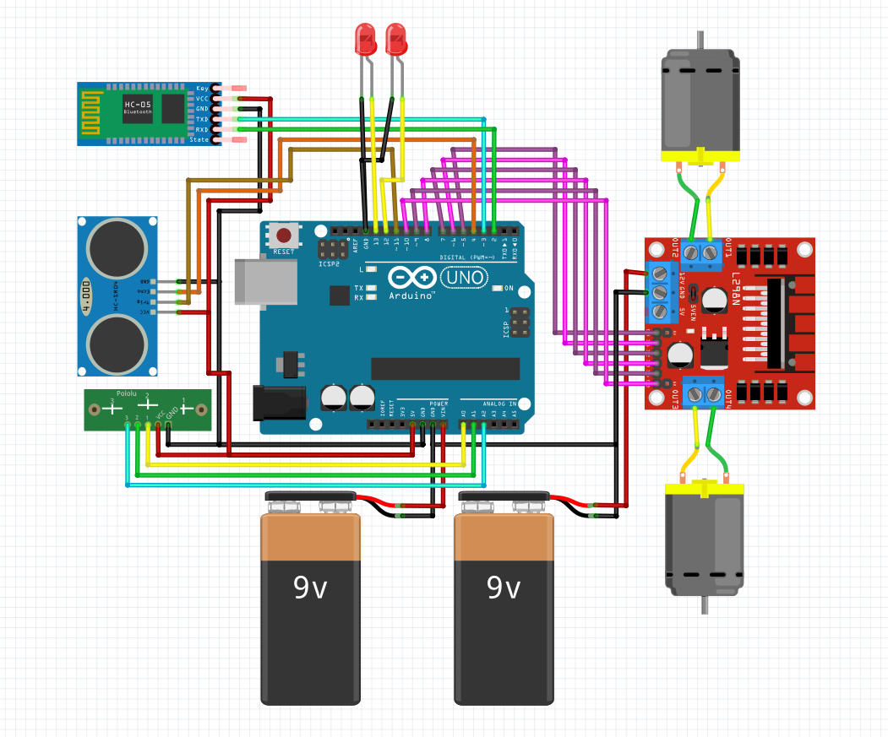